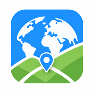
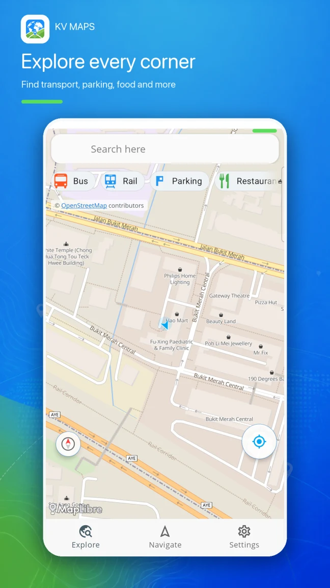
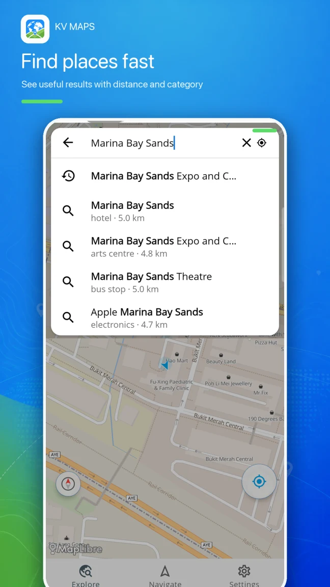
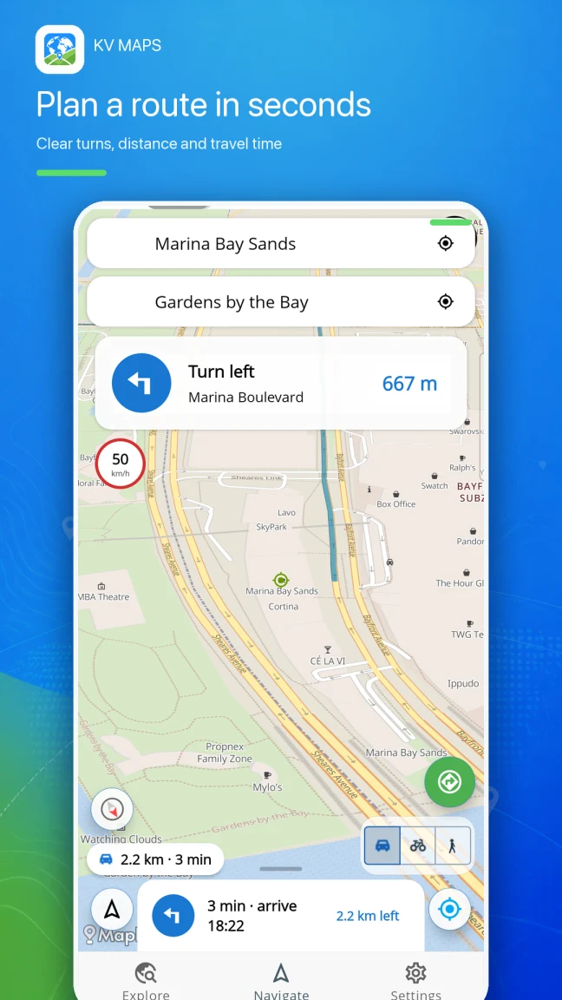
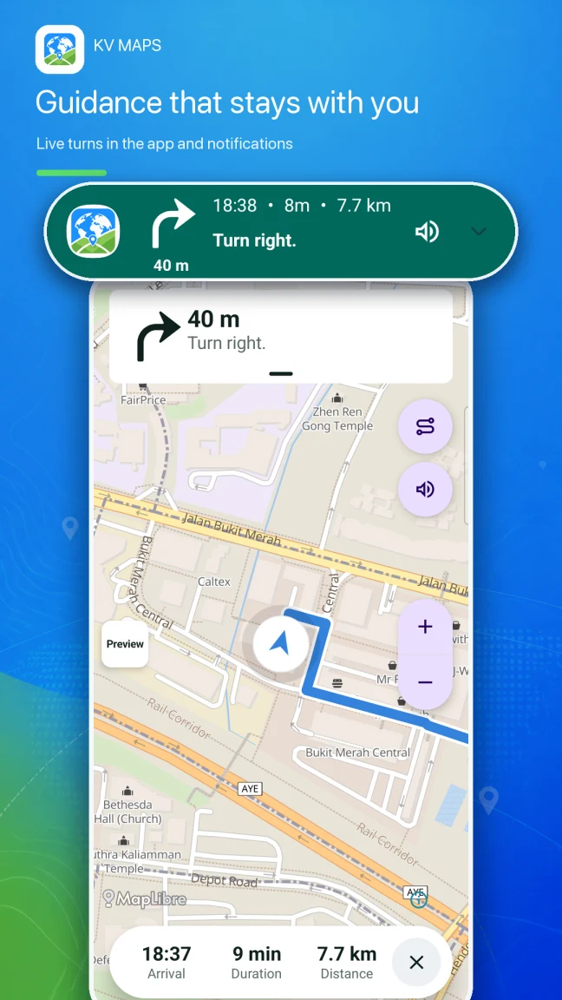
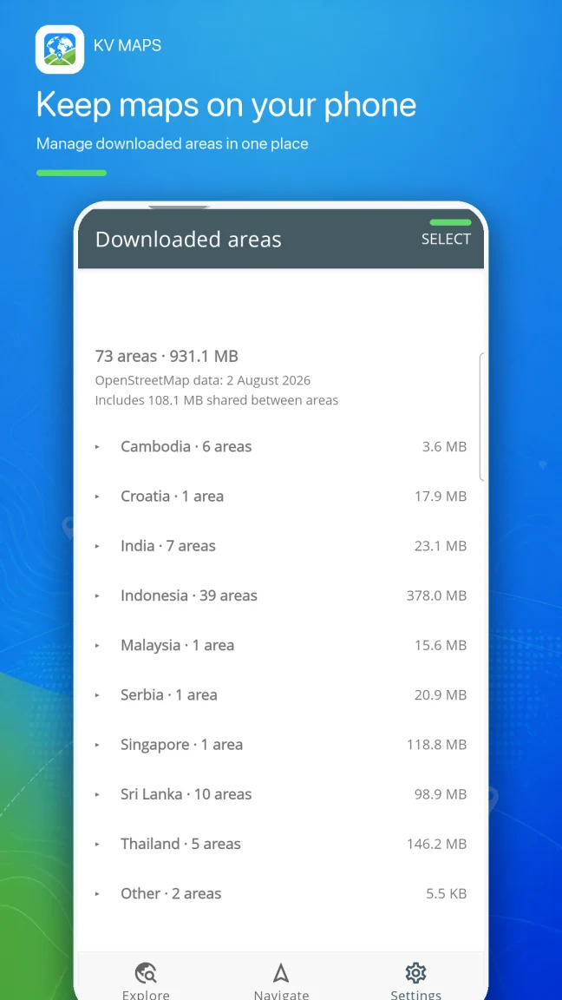

KV MAPSYOUR WORLD. READY TO EXPLORE.
Explore more.
Navigate anywhere.
From familiar streets to your next great escape. Keep the world in your pocket with offline maps, nearby places, and turn-by-turn guidance.
Get it on Google PlayKV Offline World Maps · Made for Android
LESS SEARCHING. MORE EXPLORING.
Good to go.
Wherever you go.
Find that little café. Plan the scenic route. Know your next turn. Everything you need for the journey, in one simple map app.

Get to know the neighborhood.
Discover transport, food, parking, and useful places around you.

Find your next stop.
Search for a place and see the details that help you choose.

A clear route ahead.
Choose your destination, check the distance, and get moving.

Stay on the right track.
Follow live turn-by-turn guidance in the app and notifications.

TAKE THE MAP WITH YOU
Go a little further.
Even offline.
A weak signal shouldn't end a good adventure. Prepare your maps before you leave, then find your way with downloaded content on your phone.
- 1
Choose where you're headed
Download the map areas and navigation data you need while connected.
- 2
Keep your maps together
See downloaded areas and manage their storage in one place.
- 3
Make room for discovery
Explore your downloaded maps and follow your route on the go.
Internet is needed for downloads, updates, ads, and some optional features. Offline availability depends on the data downloaded.
Can I use KV Maps without internet?
Yes. Download the relevant maps and navigation data while you have a connection. Downloaded content is stored on your phone for offline use. Downloads, updates, ads, and certain optional features still need internet access.
Which app should I download?
For the world map app featured here, choose KV Offline World Maps on Google Play. It is shown as KV Maps in the app and is available for Android.
Do I need to create an account?
No account is required to use KV Offline World Maps. Your downloaded content, preferences, and saved search history are stored on your device.
Where can I read the privacy policy?
Read the KV Offline World Maps privacy policy for information about device data, permissions, advertising, and service providers. Policies for our other apps are linked below.
YOUR NEXT ADVENTURE STARTS HERE
The world is out there.
Take your map.
KV Offline World Maps for Android